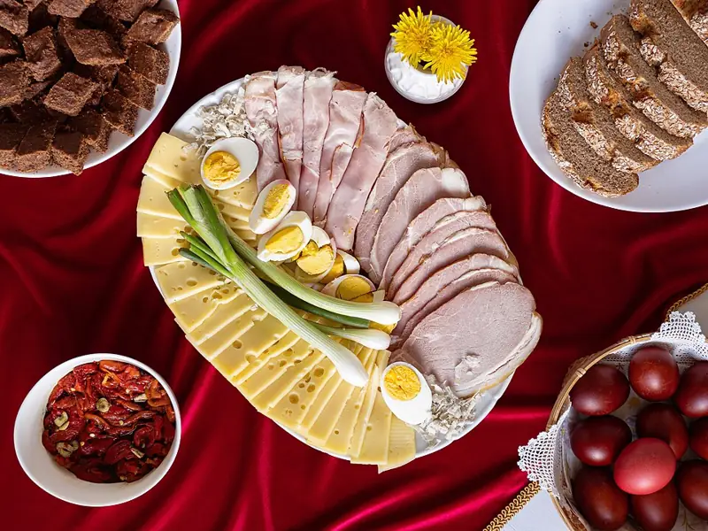

Фото: Petar Milošević, CC BY-SA 4.0
.jpg){kind=link}
Крашеные яйца в луковой шелухе
Пасхальные яйца натурального красно-коричневого цвета без покупных красителей
60 мин10 порц.86 ккал на порциюБ 7 · Ж 6 · У 0Русская кухня
Продукты на 10 порц.
- Яйцо куриное10 шт
- Лук репчатый12 шелуха с луковиц, шт
- Вода1500 мл
- Соль1 ст. л.
- Уксус 9% по желанию1 ст. л.
- Растительное масло по желанию1 ч. л.
Как готовить
- Соберите сухую шелуху с 10-12 луковиц, плотно утрамбованную в литровую банку. Чем больше шелухи, тем темнее цвет. Яйца достаньте из холодильника за 1 час.
- Шелуху залейте водой, доведите до кипения и варите на слабом огне под крышкой 30 минут, пока отвар не станет тёмно-бордовым. Остудите 15 минут.
- Яйца вымойте с содой, чтобы краска легла ровно. Для узора можно прижать к скорлупе листик петрушки и обмотать капроном.
- Добавьте в отвар соль и уксус, опустите яйца ложкой.
- Варите на слабом огне 10 минут после закипания. Для более тёмного цвета оставьте яйца в отваре ещё на 30-60 минут.
- Достаньте, остудите и натрите сухие яйца бумажной салфеткой с каплей масла для блеска.
Совет. Соль и холодные из холодильника яйца главные причины трещин, поэтому яйца грейте до комнатной температуры. Шелуха красного лука даёт фиолетовый оттенок.